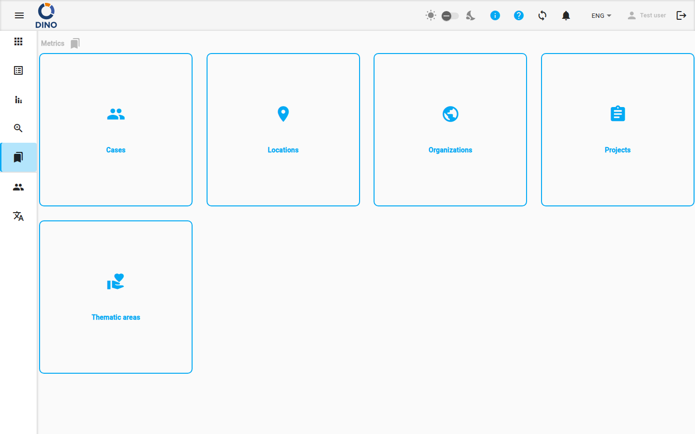

Métricas
Las métricas son las categorías de datos de referencia utilizadas en todo Dino para clasificar, organizar y filtrar los datos que recopilas. Las métricas se pueden asociar a los form recopilados y luego usarse para definir visualizaciones sobre los datos de tu instalación. Por ejemplo, las métricas se pueden usar para definir permisos de usuario: a un usuario determinado se le puede conceder acceso solo a algunos valores específicos de las métricas. Esto puede ser útil, por ejemplo, en una organización que opera en varios países, si quieres limitar a ciertos usuarios para que accedan únicamente a los datos del país donde operan. De manera similar, puedes limitar el acceso de los usuarios de Dino siguiendo otros criterios mediante otras métricas, como la métrica proyecto, para limitar el acceso solo a algunos proyectos, o la métrica organización, para limitar el acceso solo a los datos de algunos socios.
Además de usarse para limitar el acceso a los datos, las métricas también pueden usarse para facilitar filtros y agregaciones. Por ejemplo, podría querer contar cuántos form se han recopilado para un país determinado. En este caso puedo filtrar los datos de mis form en función del valor de la métrica ubicación. Los filtros también pueden beneficiarse de la estructura jerárquica de las métricas. Por ejemplo, si tengo una estructura de ubicaciones en, digamos, tres niveles, porque mapeo provincias (es decir, un valor de métrica para cada provincia), agrupadas en regiones (es decir, un valor de métrica para cada región, que también se usa como padre de las provincias), agrupadas en países (es decir, un valor de métrica para cada país, que se usa como padre de las regiones). Así, en este caso podría filtrar todos los form de una región determinada simplemente filtrando la región, seleccionando así todas las provincias que comparten la misma región.
Este mecanismo también se puede usar al generar reportes. Los datos de un report de un report schema determinado se pueden generar usando un valor particular de una métrica. Esto implicará que el report schema se aplique a todos los form que tengan el mismo valor de métrica, siguiendo una jerarquía de valores de métrica.
Por último, las métricas se pueden usar para vincular datos de distintos form. Por ejemplo, puedo tener un form para los datos personales de los beneficiarios —uno por persona— y luego otro form para sus visitas médicas —más de uno por persona. La métrica caso se puede usar para vincular el form de datos personales con los form de visitas y también para copiar algunos de los datos del form personal, como la fecha de nacimiento, a los form de visitas médicas.
Las distintas formas de usar las métricas hacen de esta entidad una herramienta potente para gestionar los datos.
La sección Métricas es donde gestionas las listas de valores disponibles para cada categoría. Sirve como el centro neurálgico de todos tus datos de referencia.

Tipos de métricas
La página principal muestra los tipos de métricas que están activos en tu instalación de Dino. Cada tipo se muestra como una tarjeta con un icono y una etiqueta. Haz clic en cualquier tarjeta para abrir su página de gestión.
Según la configuración de tu sistema, pueden estar disponibles algunos o todos los siguientes tipos de métricas:
| Tipo de métrica | Descripción |
|---|---|
| Áreas temáticas | Áreas de trabajo o agrupaciones temáticas para tus actividades. |
| Casos | Casos individuales, personas o beneficiarios rastreados a través de los datos de los form. |
| Ubicaciones | Ubicaciones geográficas donde se recopilan datos o se realizan actividades. |
| Proyectos | Proyectos a los que están vinculados los datos de form y los reportes. |
| Organizaciones | Organizaciones involucradas en las actividades o responsables de ellas. |
Acceder a las Métricas
Puedes navegar al área de Métricas haciendo clic en Métricas en el menú principal de la aplicación.
Qué puedes hacer
Desde la página principal de Métricas, puedes:
- Ver todos los tipos de métricas activos disponibles para tus datos.
- Navegar a un tipo de métrica específico haciendo clic en su tarjeta. Esto te lleva a una página dedicada donde puedes gestionar la lista de valores para ese tipo (por ejemplo, añadir una nueva ubicación o editar el nombre de un proyecto).
- Usar el recorrido de navegación en la parte superior de la página para hacer seguimiento de tu ruta de navegación dentro de la sección Métricas.
Para obtener instrucciones detalladas sobre cómo añadir, editar o eliminar valores dentro de un tipo de métrica específico, consulta la documentación de cada tipo de métrica:
Navegar por la sección Métricas
- En la página principal de Métricas, revisa las tarjetas de cada tipo de métrica disponible.
- Haz clic en la tarjeta del tipo de métrica que quieres gestionar (por ejemplo, Ubicaciones).
- Se te llevará a una página dedicada para ese tipo de métrica, donde puedes ver, añadir, editar o eliminar valores específicos.
- Usa el recorrido de navegación en la parte superior de la página para volver fácilmente a la página principal de Métricas o a otras secciones.
Configuración del sistema
Los tipos de métricas disponibles son configurados por el administrador de tu sistema. Si no ves un tipo de métrica específico que necesitas, ponte en contacto con tu administrador.
Eliminar un valor de métrica
Esto es válido para todas las métricas. Eliminar un valor de métrica, por ejemplo una ubicación determinada o un caso, puede afectar a los form que lo referencian. Por este motivo, antes de eliminar un valor de métrica, el sistema comprueba si existe algún elemento en Dino asociado a ese valor. Si hay datos de un form, datos de un report o cualquier referencia dentro de los permisos, no se permitirá eliminar ese valor. Asegúrate de que ningún registro activo dependa de un valor de métrica antes de eliminarlo.